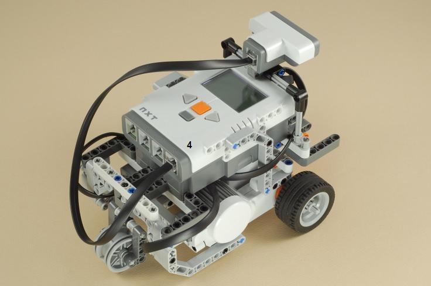
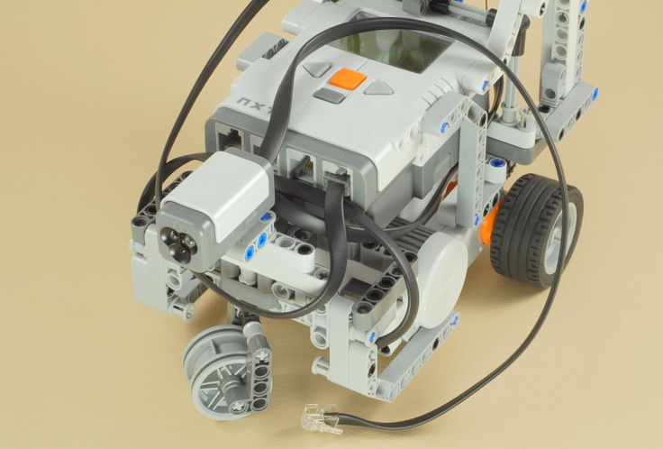
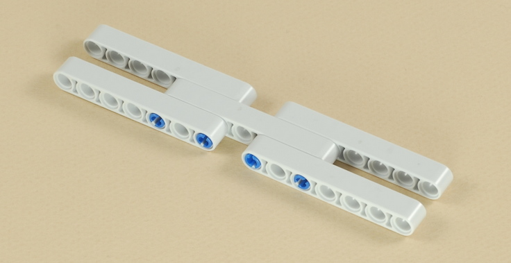

Fun Projects for your LEGO� MINDSTORMS� NXT!
|
|
Fun Projects for your LEGO� MINDSTORMS� NXT! |
| Forklift |
|

1-14
| Start by building the 3-Motor Chassis. Click the picture for building instructions. |

|
|
15
16
| Note: You will need to rotate the bushed pegs
on the chassis to fit the axles on the sensor attachment. Plug the ultrasonic sensor wire into port 4 on the NXT. |

17
18
19

20
21

22
23
24
25
26
27
28
29
| Use about 24 inches (61 cm) of kite string or other thin string. |
| Tie one end of the string to the axle of the winder and the other end to the center hole of the beam,
as shown below. |
To attach the lift assembly:
|
30

| Route the wire under the NXT as shown below to keep it out of the way, then connect it to port 3. |
31

32
33
|
Forklift Programming The ForkliftTest program is an example of an autonomous (not remote-controlled) task for the forklift, using a combination of rotation sensors and the ultrasonic sensor. See the instructions below to set up this task. The Forklift can also be operated by Bluetooth remote control from your PC. The standard remote control feature included in the NXT 2.0 software is a little too limited to easily control the forklift, but the following alternative is available. If you have a working Bluetooth connection between a Microsoft Windows-based computer and your NXT (you can download programs to the NXT by Bluetooth instead of using the USB cable), then you can use this Bluetooth Vehicle Remote program written by Anders S�borg to control the Forklift using the keyboard or mouse on your computer. See the instructions below to set it up. If you have two NXTs, see the Dial Remote Control project to control the Forklift from an NXT-based wireless (Bluetooth) remote control. |
| How to Set up for the "Forklift Test" program The ForkliftTest program is an autonomous NXT program that can be used without Bluetooth remote control. It will make the forklift lift the load of tires and place it on top of a platform by itself. The starting position for this task is as shown below.
How to Use the PC Bluetooth Vehicle Remote with the Forklift
|
||||||
Challenges
|
|
Copyright
�
2007-2010 by Dave Parker. All rights reserved. |